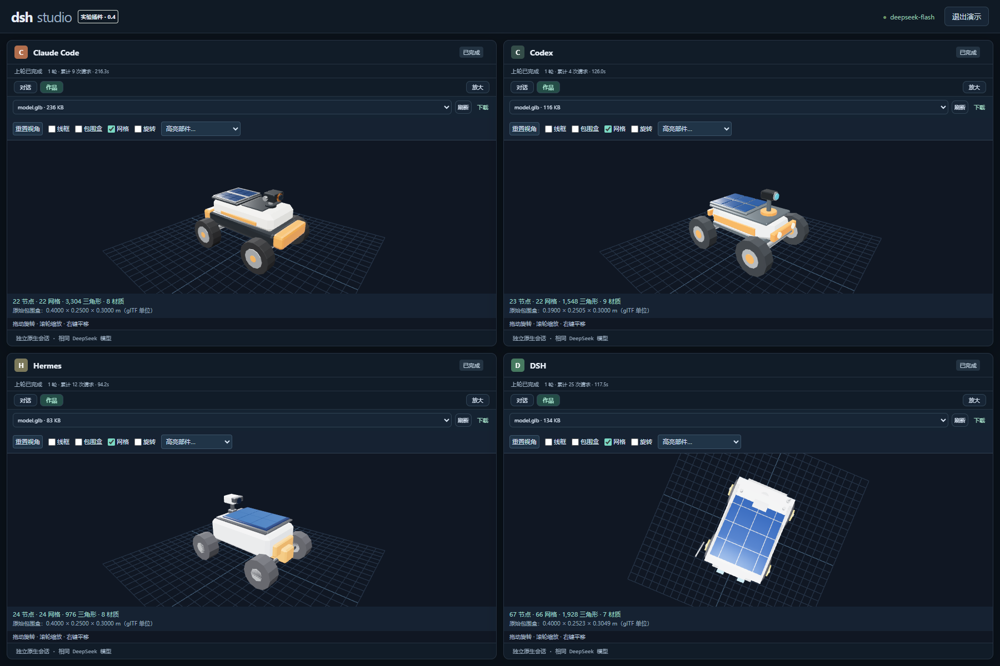

ONE PROMPT. FOUR PATHS.
同一个起点。
看见不同的创造。
Claude Code / Codex / Hermes / DSH
独立会话，共用 DeepSeek。把回复变成可观察、可检查的作品。

THE CASE COLLECTION
作品与实验长廊
实测记录与待运行任务明确区分。
点击卡片查看完整任务和验收条件。
HOW TO READ THIS GALLERY
展示，也保留证据。
01 / 同一输入
每个 harness 拿到独立副本，沿用自己的工具与会话。
02 / 分开判断
模型是否完成、文件是否可打开、约束是否通过，是三件事。
03 / 公开边界
视频案例当前是可执行任务设计，尚未发布四栏生成结果。相同模型不代表公平预算。